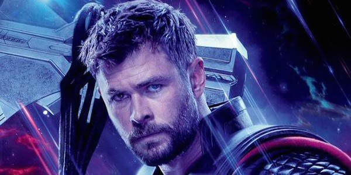
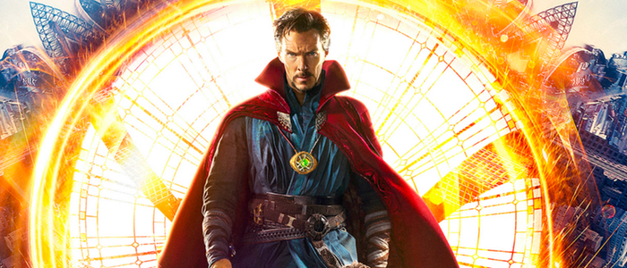

1.Captain Marvel

Captain Marvel is an extraterrestrial Kree warrior who finds herself caught in the middle of an intergalactic battle between her people and the Skrulls. Living on Earth in 1995, she keeps having recurring memories of another life as U.S. Air Force pilot Carol Danvers. With help from Nick Fury, Captain Marvel tries to uncover the secrets of her past while harnessing her special superpowers to end the war with the Skrulls.
2.Thor

Thor grew into a mighty warrior and protector of his home and people. Thought to be rash and even reckless by his father, Thor nevertheless looked forward to the day of his ascension to the throne. But, his adoptive brother Loki schemed in private to ensure that day never arrived. He manipulated Thor into attacking the Frost Giants, legendary adversaries of the Asgardians and Loki’s people, and Odin divested Thor of his magic hammer Mjolnir and banished him to Midgard, the realm also known as Earth.
3.Iron man

Anthony Edward "Tony" Stark was a billionaire industrialist, a founding member of the Avengers, and the former CEO of Stark Industries. A brash but brilliant inventor, Stark was self-described as a genius, billionaire, playboy and philanthropist. With his great wealth and exceptional technical knowledge, Stark was one of the world's most powerful men following the deaths of his parents, and enjoyed the playboy lifestyle for many years until he was kidnapped by the Ten Rings in Afghanistan, while demonstrating a fleet of Jericho missiles. With his life on the line, Stark created an armored suit which he used to escape his captors. Upon returning home, he utilized several more armors to use against terrorists, as well as Obadiah Stane who turned against Stark. Stark enjoyed the fame that came with his new secret identity and decided to share it with the world, publicly revealing himself as Iron Man
4.Spider-man

A bite from a spider somehow granted teenager Peter Parker its arachnid abilities and instead of using them for personal gain, he decided to help others with them. An orphan living with his aunt, May Parker, the boy chose to wear a mask while fighting crime so as not to burden her with his actions.Calling himself Spider-Man and sporting a pair of web-shooting devices he’d constructed, Parker wound up in internet videos which attracted the attention of Tony Stark. The billionaire industrialist deduced Spider-Man’s secret identity and approached Parker at his and May’s home in Queens, New York with a request for aid from the hero in an upcoming confrontation with Captain America and a group of other rogue Avengers and associates. Parker was initially hesitant to even admit his secret career as Spider-Man, but the thrill of adventure and Stark’s talk of responsibility drew him in and he accepted the invitation, as well as a new, high-tech costume and web-shooters.
5.Doctor strange

From Marvel Studios comes "Doctor Strange," the story of world-famous neurosurgeon Dr. Stephen Strange whose life changes forever after a horrific car accident robs him of the use of his hands. When traditional medicine fails him, he is forced to look for healing, and hope, in an unlikely place—a mysterious enclave known as Kamar-Taj. He quickly learns that this is not just a center for healing but also the front line of a battle against unseen dark forces bent on destroying our reality. Before long Strange—armed with newly acquired magical powers—is forced to choose whether to return to his life of fortune and status or leave it all behind to defend the world as the most powerful sorcerer in existence.